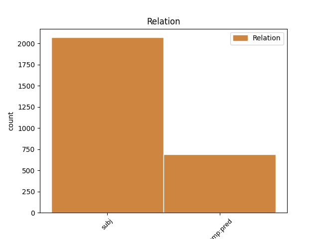

Distribution of features within this leaf

Agreement Rules sorted by frequency.
- When the dependent token is the subject(subj) of the head token, and the dependent token is NOUN.
1 #Grillo _ _ _ _ 0 _ _ _
2 non _ _ _ _ 0 _ _ _
3 mi _ _ _ _ 0 _ _ _
4 piace _ _ _ _ 0 _ _ _
5 , _ _ _ _ 0 _ _ _
6 ma _ _ _ _ 0 _ _ _
7 sta _ _ _ _ 0 _ _ _
8 dimostrando _ _ _ _ 0 _ _ _
9 che _ _ _ _ 0 _ _ _
10 il _ _ _ _ 0 _ _ _
11 nuovo _ _ _ _ 0 _ _ _
12 strumento strumento NOUN S Gender=Masc|Number=Sing 16 subj _ _
13 per _ _ _ _ 0 _ _ _
14 fare _ _ _ _ 0 _ _ _
15 #politica _ _ _ _ 0 _ _ _
16 è essere AUX V Mood=Ind|Number=Sing|Person=3|Tense=Pres|VerbForm=Fin 0 _ _ _
17 il _ _ _ _ 0 _ _ _
18 #movimento _ _ _ _ 0 _ _ _
19 multilocale _ _ _ _ 0 _ _ _
20 e _ _ _ _ 0 _ _ _
21 non _ _ _ _ 0 _ _ _
22 il _ _ _ _ 0 _ _ _
23 partito _ _ _ _ 0 _ _ _
24 nazionale _ _ _ _ 0 _ _ _
1 @user _ _ _ _ 0 _ _ _
2 compiti _ _ _ _ 0 _ _ _
3 compiti _ _ _ _ 0 _ _ _
4 .. _ _ _ _ 0 _ _ _
5 Ma _ _ _ _ 0 _ _ _
6 io io PRON PE Number=Sing|Person=1|PronType=Prs 7 subj _ _
7 dico dire VERB V Mood=Ind|Number=Sing|Person=1|Tense=Pres|VerbForm=Fin 0 _ _ _
8 vado _ _ _ _ 0 _ _ _
9 a _ _ _ _ 0 _ _ _
10 scuola _ _ _ _ 0 _ _ _
11 e _ _ _ _ 0 _ _ _
12 non _ _ _ _ 0 _ _ _
13 si _ _ _ _ 0 _ _ _
14 fa _ _ _ _ 0 _ _ _
15 un _ _ _ _ 0 _ _ _
16 tubo _ _ _ _ 0 _ _ _
17 , _ _ _ _ 0 _ _ _
18 sto _ _ _ _ 0 _ _ _
19 a _ _ _ _ 0 _ _ _
20 casa _ _ _ _ 0 _ _ _
21 malata _ _ _ _ 0 _ _ _
22 una _ _ _ _ 0 _ _ _
23 sett _ _ _ _ 0 _ _ _
24 e _ _ _ _ 0 _ _ _
25 danno _ _ _ _ 0 _ _ _
26 tutte _ _ _ _ 0 _ _ _
27 le _ _ _ _ 0 _ _ _
28 verifiche _ _ _ _ 0 _ _ _
29 üò° _ _ _ _ 0 _ _ _
1 @user _ _ _ _ 0 _ _ _
2 " _ _ _ _ 0 _ _ _
3 La _ _ _ _ 0 _ _ _
4 vita _ _ _ _ 0 _ _ _
5 e _ _ _ _ 0 _ _ _
6 i _ _ _ _ 0 _ _ _
7 sogni _ _ _ _ 0 _ _ _
8 sono essere AUX V Mood=Ind|Number=Plur|Person=3|Tense=Pres|VerbForm=Fin 0 _ _ _
9 fogli foglio NOUN S Gender=Masc|Number=Plur 8 comp:pred _ _
10 di _ _ _ _ 0 _ _ _
11 uno _ _ _ _ 0 _ _ _
12 stesso _ _ _ _ 0 _ _ _
13 libro _ _ _ _ 0 _ _ _
14 : _ _ _ _ 0 _ _ _
15 legger _ _ _ _ 0 _ _ _
16 li _ _ _ _ 0 _ _ _
17 in _ _ _ _ 0 _ _ _
18 ordine _ _ _ _ 0 _ _ _
19 è _ _ _ _ 0 _ _ _
20 vivere _ _ _ _ 0 _ _ _
21 , _ _ _ _ 0 _ _ _
22 sfogliar _ _ _ _ 0 _ _ _
23 li _ _ _ _ 0 _ _ _
24 a _ _ _ _ 0 _ _ _
25 caso _ _ _ _ 0 _ _ _
26 è _ _ _ _ 0 _ _ _
27 sognare _ _ _ _ 0 _ _ _
28 . _ _ _ _ 0 _ _ _
29 " _ _ _ _ 0 _ _ _
30 #aforismiquotidiani _ _ _ _ 0 _ _ _
1 Ciarrapico _ _ _ _ 0 _ _ _
2 : _ _ _ _ 0 _ _ _
3 Comunque _ _ _ _ 0 _ _ _
4 sa _ _ _ _ 0 _ _ _
5 quale quale PRON PQ Number=Sing|PronType=Int 6 comp:pred _ _
6 è essere AUX V Mood=Ind|Number=Sing|Person=3|Tense=Pres|VerbForm=Fin 0 _ _ _
7 il _ _ _ _ 0 _ _ _
8 problema _ _ _ _ 0 _ _ _
9 di _ _ _ _ 0 _ _ _
10 il _ _ _ _ 0 _ _ _
11 governo _ _ _ _ 0 _ _ _
12 Monti _ _ _ _ 0 _ _ _
13 ? _ _ _ _ 0 _ _ _
14 Quale _ _ _ _ 0 _ _ _
15 , _ _ _ _ 0 _ _ _
16 senatore _ _ _ _ 0 _ _ _
17 ? _ _ _ _ 0 _ _ _
18 Che _ _ _ _ 0 _ _ _
19 so' _ _ _ _ 0 _ _ _
20 troppo _ _ _ _ 0 _ _ _
21 brutti _ _ _ _ 0 _ _ _
22 #Ahahahahah _ _ _ _ 0 _ _ _
1 @user _ _ _ _ 0 _ _ _
2 Si _ _ _ _ 0 _ _ _
3 xD _ _ _ _ 0 _ _ _
4 Mi _ _ _ _ 0 _ _ _
5 sentivo sentire VERB V Mood=Ind|Number=Sing|Person=1|Tense=Imp|VerbForm=Fin 0 _ _ _
6 realizzata realizzare VERB V Gender=Fem|Number=Sing|Tense=Past|VerbForm=Part 5 comp:pred _ _
7 xDDD _ _ _ _ 0 _ _ _
8 Cosa _ _ _ _ 0 _ _ _
9 fa _ _ _ _ 0 _ _ _
10 fare _ _ _ _ 0 _ _ _
11 essere _ _ _ _ 0 _ _ _
12 una _ _ _ _ 0 _ _ _
13 Angel _ _ _ _ 0 _ _ _
14 uu _ _ _ _ 0 _ _ _
1 Senza _ _ _ _ 0 _ _ _
2 pregiudizi _ _ _ _ 0 _ _ _
3 : _ _ _ _ 0 _ _ _
4 #Grillo _ _ _ _ 0 _ _ _
5 ha _ _ _ _ 0 _ _ _
6 ragione _ _ _ _ 0 _ _ _
7 http://t.co/gVlhnCje _ _ _ _ 0 _ _ _
8 ma _ _ _ _ 0 _ _ _
9 sarebbe essere AUX V Mood=Cnd|Number=Sing|Person=3|Tense=Pres|VerbForm=Fin 0 _ _ _
10 bello _ _ _ _ 0 _ _ _
11 facesse fare VERB V Mood=Sub|Number=Sing|Person=3|Tense=Imp|VerbForm=Fin 9 subj _ _
12 anche _ _ _ _ 0 _ _ _
13 dibattiti _ _ _ _ 0 _ _ _
14 oltre _ _ _ _ 0 _ _ _
15 che _ _ _ _ 0 _ _ _
16 monologhi _ _ _ _ 0 _ _ _
17 . _ _ _ _ 0 _ _ _
1 @user _ _ _ _ 0 _ _ _
2 tutto _ _ _ _ 0 _ _ _
3 quello quello PRON PD Gender=Masc|Number=Sing|PronType=Dem 0 _ _ _
4 che _ _ _ _ 0 _ _ _
5 desidero _ _ _ _ 0 _ _ _
6 è essere AUX V Mood=Ind|Number=Sing|Person=3|Tense=Pres|VerbForm=Fin 3 subj _ _
7 1 _ _ _ _ 0 _ _ _
8 / _ _ _ _ 0 _ _ _
9 5 _ _ _ _ 0 _ _ _
10 ❤️ _ _ _ _ 0 _ _ _
11 tutto _ _ _ _ 0 _ _ _
12 quello _ _ _ _ 0 _ _ _
13 che _ _ _ _ 0 _ _ _
14 chiedo _ _ _ _ 0 _ _ _
15 è _ _ _ _ 0 _ _ _
16 parlare _ _ _ _ 0 _ _ _
17 un _ _ _ _ 0 _ _ _
18 po _ _ _ _ 0 _ _ _
19 anche _ _ _ _ 0 _ _ _
20 con _ _ _ _ 0 _ _ _
21 te _ _ _ _ 0 _ _ _
1 Indiscrezioni _ _ _ _ 0 _ _ _
2 Governo _ _ _ _ 0 _ _ _
3 Monti _ _ _ _ 0 _ _ _
4 : _ _ _ _ 0 _ _ _
5 Passera _ _ _ _ 0 _ _ _
6 per _ _ _ _ 0 _ _ _
7 lo _ _ _ _ 0 _ _ _
8 sviluppo _ _ _ _ 0 _ _ _
9 pare parere VERB V Mood=Ind|Number=Sing|Person=3|Tense=Pres|VerbForm=Fin 0 _ _ _
10 sia essere AUX V Mood=Sub|Number=Sing|Person=3|Tense=Pres|VerbForm=Fin 9 comp:pred _ _
11 una _ _ _ _ 0 _ _ _
12 richiesta _ _ _ _ 0 _ _ _
13 particolare _ _ _ _ 0 _ _ _
14 di _ _ _ _ 0 _ _ _
15 Berlusconi _ _ _ _ 0 _ _ _
16 . _ _ _ _ 0 _ _ _
Disagree Examples:
1 E' _ _ _ _ 0 _ _ _
2 nato _ _ _ _ 0 _ _ _
3 il _ _ _ _ 0 _ _ _
4 governo _ _ _ _ 0 _ _ _
5 Monti _ _ _ _ 0 _ _ _
6 . _ _ _ _ 0 _ _ _
7 Speriamo sperare VERB V Mood=Imp|Number=Plur|Person=1|Tense=Pres|VerbForm=Fin 0 _ _ _
8 sia essere AUX V Mood=Sub|Number=Sing|Person=3|Tense=Pres|VerbForm=Fin 7 comp:pred _ _
9 buono _ _ _ _ 0 _ _ _
10 . _ _ _ _ 0 _ _ _
1 Sallusti _ _ _ _ 0 _ _ _
2 è _ _ _ _ 0 _ _ _
3 scandaloso _ _ _ _ 0 _ _ _
4 , _ _ _ _ 0 _ _ _
5 attacca _ _ _ _ 0 _ _ _
6 il _ _ _ _ 0 _ _ _
7 governo _ _ _ _ 0 _ _ _
8 Monti _ _ _ _ 0 _ _ _
9 perché _ _ _ _ 0 _ _ _
10 non _ _ _ _ 0 _ _ _
11 paga pagare VERB V Mood=Ind|Number=Sing|Person=3|Tense=Pres|VerbForm=Fin 0 _ _ _
12 gli _ _ _ _ 0 _ _ _
13 imprenditori imprenditore NOUN S Gender=Masc|Number=Plur 11 subj _ _
14 che _ _ _ _ 0 _ _ _
15 si _ _ _ _ 0 _ _ _
16 suicidano _ _ _ _ 0 _ _ _
17 . _ _ _ _ 0 _ _ _
18 Il _ _ _ _ 0 _ _ _
19 suo _ _ _ _ 0 _ _ _
20 capo _ _ _ _ 0 _ _ _
21 non _ _ _ _ 0 _ _ _
22 li _ _ _ _ 0 _ _ _
23 ha _ _ _ _ 0 _ _ _
24 pagati _ _ _ _ 0 _ _ _
25 in _ _ _ _ 0 _ _ _
26 18 _ _ _ _ 0 _ _ _
27 anni _ _ _ _ 0 _ _ _
28 . _ _ _ _ 0 _ _ _
1 @user1 _ _ _ _ 0 _ _ _
2 @user2 _ _ _ _ 0 _ _ _
3 @user3 _ _ _ _ 0 _ _ _
4 le _ _ _ _ 0 _ _ _
5 delusioni delusione NOUN S Gender=Fem|Number=Plur 6 subj _ _
6 capitano capitare VERB V Mood=Ind|Number=Sing|Person=1|Tense=Pres|VerbForm=Fin 0 _ _ _
7 a _ _ _ _ 0 _ _ _
8 tutti _ _ _ _ 0 _ _ _
9 . _ _ _ _ 0 _ _ _
10 non _ _ _ _ 0 _ _ _
11 arrender _ _ _ _ 0 _ _ _
12 ti _ _ _ _ 0 _ _ _
13 ! _ _ _ _ 0 _ _ _
14 :) _ _ _ _ 0 _ _ _
1 @user _ _ _ _ 0 _ _ _
2 UNICA _ _ _ _ 0 _ _ _
3 PROPOSTA _ _ _ _ 0 _ _ _
4 DI _ _ _ _ 0 _ _ _
5 CAMBIAMENTO _ _ _ _ 0 _ _ _
6 E' _ _ _ _ 0 _ _ _
7 “ _ _ _ _ 0 _ _ _
8 ITALIA _ _ _ _ 0 _ _ _
9 TERRA _ _ _ _ 0 _ _ _
10 LIBERA _ _ _ _ 0 _ _ _
11 “ _ _ _ _ 0 _ _ _
12 , _ _ _ _ 0 _ _ _
13 gli _ _ _ _ 0 _ _ _
14 altri _ _ _ _ 0 _ _ _
15 SONO essere AUX V Mood=Ind|Number=Plur|Person=3|Tense=Pres|VerbForm=Fin 0 _ _ _
16 IL _ _ _ _ 0 _ _ _
17 VECCHIO vecchio NOUN S Gender=Masc|Number=Sing 15 comp:pred _ _
18 O _ _ _ _ 0 _ _ _
19 CLONI _ _ _ _ 0 _ _ _
20 . _ _ _ _ 0 _ _ _
1 POLITICA _ _ _ _ 0 _ _ _
2 . _ _ _ _ 0 _ _ _
3 #Panebianco _ _ _ _ 0 _ _ _
4 su _ _ _ _ 0 _ _ _
5 il _ _ _ _ 0 _ _ _
6 CorSera _ _ _ _ 0 _ _ _
7 : _ _ _ _ 0 _ _ _
8 La _ _ _ _ 0 _ _ _
9 durata durata NOUN S Gender=Fem|Number=Sing 18 subj _ _
10 e _ _ _ _ 0 _ _ _
11 la _ _ _ _ 0 _ _ _
12 stabilità _ _ _ _ 0 _ _ _
13 di _ _ _ _ 0 _ _ _
14 il _ _ _ _ 0 _ _ _
15 governo _ _ _ _ 0 _ _ _
16 Monti _ _ _ _ 0 _ _ _
17 non _ _ _ _ 0 _ _ _
18 hanno avere VERB V Mood=Ind|Number=Plur|Person=3|Tense=Pres|VerbForm=Fin 0 _ _ _
19 nulla _ _ _ _ 0 _ _ _
20 a _ _ _ _ 0 _ _ _
21 che _ _ _ _ 0 _ _ _
22 fare _ _ _ _ 0 _ _ _
23 con _ _ _ _ 0 _ _ _
24 la _ _ _ _ 0 _ _ _
25 questione _ _ _ _ 0 _ _ _
26 di _ _ _ _ 0 _ _ _
27 il _ _ _ _ 0 _ _ _
28 #referendum _ _ _ _ 0 _ _ _
29 . _ _ _ _ 0 _ _ _